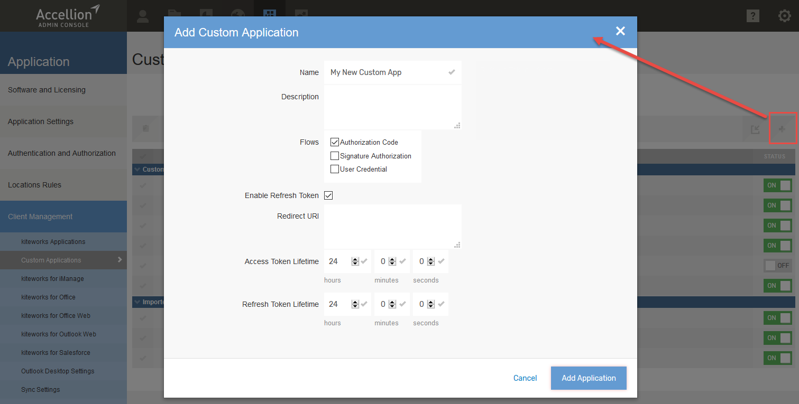
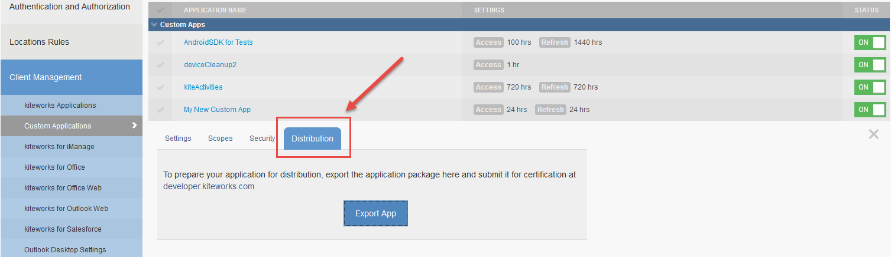

Introduction
Welcome to Accellion's API Guide.
Accellion’s RESTful Enterprise API is programming language agnostic and enables you to quickly develop apps that leverage the power of the Accellion Platform. Developers can build custom apps tailored to specific industries, business use cases, and integrate them within an existing IT infrastructure. The APIs allow you to do an HTTPS GET, POST, DELETE or UPDATE.
Prerequisites
It is assumed that the reader is familiar with the following concepts and technologies used within the Accellion API framework:
* Representational State Transfer (REST) architectural styles
* RESTful style constraints and implementation
* OAuth 2.0 Protocol
* JavaScript Object Notation (JSON) format and structure
* Hypertext Transfer Protocol (HTTP) terminology, methods, and status codes
* Multipart MIME (Multipurpose Internet Mail Extensions) requests
Licensing
The RESTAPI is available on every Accellion Enterprise package that has the Automation Suite enabled.
Perform the following two steps to see if you have a license for the Accellion APIs: 1. Log into an Accellion system and click on the Application icon as shown below. 2. Click on Licensing on the left panel. The API is listed in the Features section and it will be enabled if you have an Accellion Enterprise package.
Enabling the Accellion API Playground
Perform the following steps to enable the Accellion API Playground: 1. Click on the Application > Client Management > Custom Applications as shown below. 2. Click on Enable kiteworks API Playground UI ON/OFF switch to enable it if it not enabled. A confirmation window displays, click OK to enable the playground.
Getting Started
To start your custom application development, perform the steps below. 1. Sign in to kiteworks. Once you have your instance up and running, sign in to the Accellion admin interface with your user credentials. The admin interface can be accessed from the hostname of your Accellion server /admin. 2. Create your custom application to obtain the identifying information: the Client ID and Secret Key.
Custom Applications
Custom applications can be used to automate business workflows, for example, on-boarding new Accellion users to access relevant folders automatically. Accellion APIs are used to develop custom applications. On the Custom Application page a list with all the custom applications that already exist on the system is displayed.
Perform the following steps to create a Custom Application:
1. Go to Applications > Client Management > Custom Applications and click the + icon to create a new custom application.
2. Enter the following information:
Name: Enter a name for your custom application.
Description: Enter a description for your application.
Flows: Select the authorization flow that your application will use to obtain an access token.
-Authorization Code: standard OAuth 2.0 authorization-code grant type consists of authorization, consent, and code redemption process.
-Signature Authorization: use this flow when the registered client can verify the identity of the user. This flow should only be used for trusted applications. You can choose to either generate a random signature key or manually enter the key.
-User Credentials: use this flow to allow the registered client to obtain the access token by providing the user's username and password. This flow should only be used for trusted applications that cannot use a Web Form based login, but need the user to authenticate with their username/password, e.g., any command line based utilities. This flow follows the Resource Owner Password Credentials Grant specified in RFC 6749.
Enable Refresh Token: If enabled, when an access token expires, a new access token can be obtained using a refresh token without re-initiating the authorization process.
Redirect URI: Specify the Redirect URI using this format https://%%HOST%%/rest/callback.html
Access Token Lifetime: Set the duration of a token lifetime.
Refresh Token Lifetime: Set the duration that an access token can be refreshed.
Click Add Application.

The Add Client Application dialog box will show the Client Application ID, Client Secret Key and the Signature Secret. Record the information in a secure location.
Click OK. The application you just created will display on the Custom Applications page.
Select the Application Name you just created, and customize the Settings, Scopes, Security and Distribution tabs.
Settings tab: You can make changes to the settings, if desired.
Scopes: Scopes are defined limits to client applications for accessing data. By selecting the appropriate scopes for the application, clients can enable or restrict certain tasks to be performed by a user or on behalf of an Accellion user.
Every custom application that is created can have server-side authorization scopes. You can define on the server what endpoints the custom application is allowed to use and how it can use those endpoints. Select the APIs you plan to use for your custom application. By default, all APIs are selected when you first create the application.
Security tab:
Remote Wipe Enabled:
Enable Remote Wipe for this application.
Pin Enabled:
Specify whether a PIN should be enabled for this application. Recommended for mobile apps.
White Listed Apps:
List third-party mobile apps that can be used to open files via the Open-In menu.
Select Save Changes.
You are now ready to test your application. Go to
Distribution:
You can distribute your application and export the application package by clicking Export App.

Sign Up for the Free Enterprise Trial of kiteworks
Go to the following site to sign up: https://info.accellion.com/mlp-trl-Enterprise-Trial.html
Within a few minutes after signing up, your trial Accellion system in the cloud will be ready for use. You will receive an email from provisioning@accellion.com with instructions on how to access it.
Accellion API Playground Documentation (Swagger Interface)
The Accellion APIs are used by the custom applications to access user resources on a Accellion server.
API Usage – The APIs follow the REST architectural style and use the scheme of addressing a resource and invoking a method on that resource.
The API URI – All APIs can be called using the following URI scheme: https://<hostname/rest/
**API Output 88 – The API result is returned in JSON format.
To access the Accellion the API Playground, click on the ? (Help) icon and select Developer Documentation as shown below or type in the URL of the kiteworks instance/rest/index.html.
The Developer Documentation Swagger Interface displays.
There are several API versions, all of which are supported. To maintain and enhance security and performance, Accellion rolls out API versions periodically. It is recommended to configure the application to run the latest API version which ensures the benefit of using the latest features.
Click on API version and select the latest API version before you start using the APIs.
Obtaining a Token
Select the Get a Token button in the upper right corner of Developer Documentation page. This token is used for all requests sent out from this documentation page.
You can request a token from the following grant types based on how your system is configured:
* Authorization Code
* Signature-based Authorization Code
* Signature-based Access
* User Credential
* User Credential (using HTTP Basic Authorization)
* SAML 2.0 Assertion
* JWT Assertion
Authentication
Signature Authorization flow
Accellion offers Signature Authorization flow for trusted apps where user interaction is impossible or undesirable. This is mostly applicable when some backend servers in your corporate network need to communicate with Accellion or when your app handles user authentication on its own.
To view the sample code, click on the php tab on the right panel.
<?php
// --- Configuration Section ---
$kiteworks_hostname = 'YOUR-SERVER.DOMAIN.ORG';
$client_app_id = 'YOUR-CLIENT-APP-ID';
$client_app_secret_key = 'YOUR-CLIENT-APP-SECRET-KEY';
$signature_key = 'YOUR-SIGNATURE-KEY';
$user_id = 'YOUR-USER-EMAIL-TO-BE-USED-FOR-API-INTEGRATION';
$api_scope = 'YOUR-CLIENT-APP-SCOPES'; // e.g. 'folders/* files/* mail/*'
$redirect_uri = 'YOUR-REDIRECT-URI';
// --- Generate Signature Based Auth Code ---
$timestamp = time();
$nonce = rand(1, 999999);
$base_string = "$client_app_id|@@|$user_id|@@|$timestamp|@@|$nonce";
$signature = hash_hmac("sha1",$base_string, $signature_key);
$auth_code = base64_encode($client_app_id)."|@@|".base64_encode($user_id)."|@@|$timestamp|@@|$nonce|@@|$signature";
// --- Initialize CURL Parameters Section ---
$access_token_endpoint = "https://$kiteworks_hostname/oauth/token";
$postData = "client_id=" . urlencode($client_app_id) . "&";
$postData .= "client_secret=". urlencode($client_app_secret_key) . "&";
$postData .= "grant_type=authorization_code&";
$postData .= "code=". urlencode($auth_code) . "&";
$postData .= "scope=". urlencode($api_scope) . "&";
$postData .= "redirect_uri=". urlencode($redirect_uri);
// --- Make CURL request ---
$ch = curl_init();
curl_setopt($ch, CURLOPT_URL, $access_token_endpoint);
curl_setopt($ch, CURLOPT_RETURNTRANSFER,1);
curl_setopt($ch, CURLOPT_POST, 1 );
curl_setopt($ch, CURLOPT_POSTFIELDS, $postData );
$response = curl_exec( $ch );
$curl_error = curl_error($ch);
$error_no = curl_errno($ch);
curl_close($ch);
// --- Print Response ---
if ($curl_error) {
print "Curl error $error_no: " . $curl_error."\n";
die();
}
else {
$arr_response = json_decode($response, true);
print_r($arr_response);
}
?>
Steps in Signature flow
- Calculate authorization code using the following parameters:
- Signature Key and Client ID: These were displayed on the Admin interface when the custom app using Signature flow was created.
- Email address of the user for whom the app needs an access token.
- Current timestamp: The code will remain valid for an hour after creation.
- Nonce: A random integer between 1 and 999999. Using these parameters, the authorization flow can be calculated. First, a base string should be calculated using the following format: base_string = client_id|@@|user_id|@@|timestamp|@@|nonce
Here is a sample snippet of Java code to calculate the base string:
//Constructs the base string using elements outlined in the documentation
String baseString + clientId + “|@@}” + userId + “|@@|” + Long.toString(timestamp) + “|@@|” + Integer.toString(nonce);
From there, the signature of the base string can be calculated, using the HMAC SHA1 method, and using the client application’s signature key as the HMAC’s key:
signature = HMAC_SHA1(base_string, client_signature_key)
Here is a sample method in Java to calculate the signature:
//Used by the authentication method. Gets a signature based on a key and a base string
Private String getSignature(String clientSignatureKey, StringbaseString) throws Exception{
Mac hmacsha1 = Mac.getinstance(“HmacSHA1”);
SecretKeySpec signinKey = new SecretKeySpec(clientSignatureKey.getBytes(), “HmacSHA1”);
Hmacsha1.init(signingKey);
Byte[] rawHmac = hmacsha1.doFinal(baseString.getBytes());
String signature = DatatypeConverter.printHexBinary(rawHmac).toLowercase();
return signature;
]
Finally, the authorization code can be constructed as follows:
auth_code = base64_encode(client_id)|@@|base64_encode(user_id)|@@|timestamp|@@|nonce|@@|signature
Here is a sample method in Java for calculating the authorization code:
//Used by the authentication method. Gets an auth code based on parameters.
Private String getAuthCode (String clientId, String userId, String timestamp, String nonce, String signature) throws IOException {
//Base 64 encoder
BASE64Encoder encoder = new BASE64Encoder();
//encodes the client id and takes off the last character, as the encoder adds a new line character at the end
String encodedClientId = encoder.encodeBuffer(clientId.getBytes());
encodedClientId = encodedClientId.substring(0, encodedClientId.length() – 1);
//encodes the user id
String encodeUserId = encoder.encodrBuffer(userId.getBytes());
encodeUserId = encodeUserId.substring (0, encodeUserId.length() – 1;v
//Construct auth code
String authCode = encodedClientId + “|@@|” + encodedUserId + “|@@|” + timestamp + “|@@|” + nonce + “|@@|” + signature;
return authcode;
}
- Fetch access token from Accellion's token URI using the following parameters:
- Client ID and secret: Displayed on Admin interface when app was created.
- Grant Type: This should be the string “authorization_code” for the token request to work.
- Scope: This is the scope of the API services that the client application wants to access. This should be a space-separated string that consists of the name of the services that the application requires. The requested scope must be a subset of the client application’s registered scope in the server.
- Redirect URL: This is exactly the same redirect URI as registered with the server.
- Code: This is the authorization code calculated in step one.
- install_tag_id (optional parameter): This is a string to uniquely identify the device from which the API call has initiated.
- install_name (optional parameter): This is the friendly name of the device from which the API call has initiated
Here is an example of the POST request:
POST /oauth/token HTTP/1.1
Host: kiteworks_server
Content-type: application/x-www-form-urlencoded
Content-length: 415
Connection: close
Client_id=playground&client_secret=secret&grant_type=authorization_code&scope=*
%2folders%2F*%202F8files%&code=cGxheWdyb3VuZA%3D%7C
%40540%7CdGVzdEBhY2N1bGxpb24uY29t%7C%40%40%7c1407493837%7C%40%40%7C724408%7C
%40%40%7C4efc222192b742bd56516004412cce79267b4c02&redirect_url=https%3A%2F%2Fserver.com%2F
Here is a sample method in Java to construct the string of parameters to be sent in the request:
//Assembles all of the elements necessary to be passed through the web requested
//to be authenticated successfully
private String getParams(String clientId, String clientSecret, String scope, String redirectUri, StringauthCode) {
String params = "client_id=" + clientId + "&";
params = params + "client_secret=" + clientSecret + "&";
params = params + "grant_type=" + "authorization_code" + "&";
params = params + "scope=" + scope + "&";
params = params + "redirect_uri=" + URLEncoder.encode(redirectUri) + "&";
params = params + "code=" + URLEncoder.encode(authCode);
return params;
}
Responses from server
Once these two steps are complete, if there are no errors for the POST request, the server will return a HTTP response 200 OK. The body for the response will be in JSON format and will include the following:
- access_token: This is the token that will be used for all requests to the API.
- expires_in: This is the number of seconds after which the access token will expire.
- scope: This is the scope for which this token is valid.
- refresh_token: This is a token that can be used to get a new access token without going through the first step of authorization.
- token_type: This will be set to “bearer” because that is the type of token.
Here is an example of a successful response:
HTTP/1.1 200 OK Cache-Control: no-store Content-Type: application/json
{"access_token":"054915e674bc35fa7fff1f499044e964d3a5d61b","expires_in":3600,"token_type":"bearer,"scope":"*\/folders\/* *\/files\/*", "refresh_token":"085b8f5e3153c083fdde20d53030b5b623a6ecb3"}
If there are problems with the request, the server will return a HTTP 400 bad request. The body of the response will contain error information in JSON format. Here are the possible values for the error code:
- invalid_client: This indicates that the client application authentication failed. This is likely because either the client ID and/or the secret key provided are incorrect.
- invalid_grant: This indicates that the user’s credentials are not valid.
- invalid_scope: This indicates that the requested scope in invalid or exceeds the previously granted scope.
- invalid_request: This indicates that the request is malformed, which usually means that there is a missing parameter that is required.
- unauthorized_client: This indicates that the client application is not authorized to use this flow.
kiteworks Authorization Code (OAuth 2.0 Flow)
The kiteworks APIs allows any new client application (client for short) to be developed for the kiteworks solution. The APIs can be used by the client to gain access to resources belonging to a user on the kiteworks server. The APIs can only be used by a client that is registered on the kiteworks server.
A client must provide an access token to access resources belonging to a user on the kiteworks server. The kiteworks server provides access token provisioning flows based on the OAuth 2.0 (https://tools.ietf.org/html/rfc6749). The majority of clients will consume the so-called Authorization Code Flow to obtain an access token. This flow is developed based on the authorization code grant type of the OAuth 2.0 specification.
This section provides a step-by-step guide for application developers to build a client for consuming the Authorization Code Flow to obtain an access token and use the access token to access users’ resources on a kiteworks server.
Obtaining Access Token Requirements
For obtaining an access token using the kiteworks Authorization Code Flow, you need the client registration information recorded in the previous steps:
- client_id – This is a unique system generated id of your client.
- client_secret – This secret serves as a password for your client to authenticate itself to the kiteworks server.
- redirect URI – This is the URI on which your client must listen for the authorization result. For mobile clients or for clients that cannot be redirected to another service, the landing page https://
/oauth_callback.php can be used. - scope – This is the set of API services that your client wants to access. Consult with your administrator regarding which scopes are available for your client.
- grant_type – REQUIRED. Value MUST be set to "authorization_code".
Sequence Overview
The sequence of the Authorization Code Flow is as follows: 1. The client initiates the flow by redirecting the user-agent (browser or web view component) to the appropriate authorization page on the server. The client includes its ID and a redirect URI to which the server will send the user back once access is granted or denied. 2. The server authenticates the user using a login page similar to web client login page and establishes whether the user grants or denies the client's access request. 3. If the user grants access, the server redirects the user-agent to the redirection URI provided earlier. The URI also includes an authorization code that can be used to request an access token for that user. 4. The client requests an access token from the server by authenticating itself (using its ID and secret) and including the authorization code received in the previous step. 5. The server validates the client credentials and the authorization code and responds with the access token. The client uses the access token to invoke APIs for accessing user’s resources.
Step-by-step Usage
The request-response of this flow follows the specification of OAuth 2.0 protocol (http://tools.ietf.org/html/rfc6749#section-4.1). All requests for authorization and for calling service must be done through HTTPS. The URI end-points of this flow are as follows:
* Authorization end-point: https://
Step 1 Authorization Request
The first step is to call the Authorization end-point with the request parameters passed via HTTP GET. Depending on the case, the user may be prompted with a dialog to authenticate and then to authorize the request for access permission by the client application. The following parameters must be passed in the request to the Authorize URI (this follows the OAuth 2 specification).
- client_id – is the identifier of the client-application as registered in the server. For example ‘playground’.
- redirect_uri – is the URI to which the result of the authorization will be passed. This redirect URI must start with the URI specified at the time of the creation/registration of the client application. For example, if the client application had registered with the redirect URI of https://mydomain.com/oauth then the client application may provide https://mydomain.com/oauth/callback as redirect_uri parameter in this request. Note, that this parameter must be properly URL-encoded.
- response_type – the value of this parameter must be set to “code”.
- scope – is the scope of the API services that the client wants to access. This is a space-separated string consisting of the name of the method and API services that the application requires. For example: “GET/users/* /files/”. The requested scope must be a sub-set of the client application's registered scope in the server. If a blank scope is provided, the registered scope will be assumed.
- m (optional parameter) – set to 1 to display mobile friendly authorization page.
- state (optional parameter) – is an optional parameter that the client application may pass in order to maintain the state of its process. The server will pass back this parameter as-is in the response.
Example:
(Note that line break is used only for clarity)
GET https://kiteworks_server/oauth/authorize?
client_id=abc&response_type=code&scope=&redirect_uri= https%3A%2F%2Fkiteworks_server%2Foauth_callback.php HTTP/1.1
Successful Response After the server finishes the authorization and authentication procedure with the user, the server will redirect the user (via HTTP 302) to the redirect_uri provided in the Authorize call. Two parameters will be passed through this redirection URI: code and state. The code parameter is the authorization code that can be used to obtain the access token in the second step.
Example:
HTTP/1.1 302 Found
Location: https://kiteworks_server/oauth_callback.php?code=60cc146c8dced75e26e
Error Response
If an error occurs (such as invalid consumer id, or invalid redirect URI), an error message will be displayed immediately within the user’s browser. For other errors (such as invalid scope or denied access by the user) the server will redirect the user (via HTTP302) to the redirect_URI. The parameters are:
* error – is the error code. The following are the possible values of the error code:
- access_denied: The user denied the permission request.
- invalid_scope: The requested scope is invalid.
- invalid_request: The request is missing a required parameter, includes an unsupported parameter or parameter value, or is otherwise malformed.
- unauthorized_client: The client-application is not authorized to use this flow.
- state – is set to the exact value received in the request.
Example:
HTTP/1.1 302 Found
Location: https:// kiteworks_server/oauth_callback.php?error=access_denied
Step 2 - Access Token Request
The authorization code obtained in the first step can be exchanged for the final access token by making a request to the access token end-point. The following parameters must be passed to the token end-point as POST parameters: * client_id – is the ID of the client as registered in the server. E.g. ‘playground’. * client_secret – is the client’s secret phrase as registered in the server. * grant_type – its value must be set to authorization_code. * redirect_uri – is exactly the same redirect URI as used in the first step. * code – is the authorization code obtained in the first step. * install_tag_id (optional parameter) – is a string to uniquely identify the device from which the API call has initiated. * install_name (optional parameter) – is the friendly name of the device from which the API call has initiated.
Example:
(Note that line breaks on the message content are used only for clarity)
POST /oauth/token HTTP/1.1
Host: kiteworks_server
Content-type: application/x-www-form-urlencoded
client_id=abc&client_secret=TheSecret&grant_type=authorization_code&code=c88bc36f751549adf60658c2c607a03b52e417bc& redirect_uri= https%3A%2F%2Fkiteworks_server%2Foauth_callback.php &install_tag_id=device_123&install_name=user_ipad
Successful Response If the credentials of the client and the authorization code are valid and there is no other error, the server will return a HTTP response 200 OK. The body of the response is in JSON format with the following information:
- access_token – is the token that can be used to request an API service.
- expires_in – is the number in seconds after which the access token would expire.
- token_type – is set to “bearer”
- scope – is the scope for which this token is valid, normally it will be the same as the requested scope.
- refresh_token – is the refresh token that can be used to get a new access token without going through Step 1 Authorization Request. This refresh token will be provided only if the client is allowed to use refresh tokens as specified during client registration.
Example:
HTTP/1.1 200 OK
Cache-Control: no-store
Content-Type: application/json
{"access_token":"d932e1d32d89140163345d47fa97bfa60eeba1a5","expires_in":"360000","token_type":"bearer", "scope":"GET\/users\/* *\/files\/*","refresh_token":"d7ce54d721e8das60943f3fc7cb159e4b11d0ee5"}
This access token can then be used to access user's resources through API services.
Error Response If the credentials of the client or the authorization code is invalid or there is some other error, the server will respond with HTTP 400 Bad Request. The body of the response will contain the following error information in JSON format: * serror – is the error code. The following are the possible values : - invalid_client – Client authentication failed. The client ID and/or secret key provided is invalid. - invalid_grant – The authorization code or redirect URI provided is invalid. invalid_scope – The requested scope is invalid or exceeds the previously granted scope. - invalid_request – The request is missing a required parameter, includes an unsupported parameter or parameter value, or is otherwise malformed. - unauthorized_client – The client is not authorized to use this flow.
Example script for getting the OAuth token (Python 2.7):
#!/usr/bin/python
'''
Script for generating OAuth token using Kiteworks API
'''
import hmac
import requests
import json
import time
import datetime
import hashlib
import base64
import random
def auth_code(client_id, user_id, time_stamp, nonce, signature_key):
'''
Step 1 - Calculate authcode using signature_key.
'''
# create a base string using |@@| as delimiter between values
base_string = client_id + '|@@|' + user_id + '|@@|' + str(time_stamp) + '|@@|' + str(nonce)
# create HMAC cryptographic signature
sig = hmac.new( signature_key, msg=base_string, digestmod=hashlib.sha1).hexdigest()
# generate auth code with base64 encoded client_id, user_id with time_stamp, nonce and the HMAC sig
auth_code = base64.b64encode(client_id) + '|@@|' + base64.b64encode(user_id) + '|@@|' + str(time_stamp) + '|@@|' + str(nonce) + '|@@|' + sig
return authcode
def oauth_token(token_uri, header_data, access_data)
'''
Step 2 - Request OAuth token from Kiteworks now that we have all the information that is needed.
'''
response = request.post(token_uri, headers=header_data, data=access_data)
return response
def main()
# Setup initial variables required for OAuth, as well as scope for Kiteworks APIs
client_id = "186f9w3d-4e52-555c-89ff-a8c306422186"
client_secret = "zjzHsj2g"
user_id = "jeremy.user.1@gmail.com"
redirect_uri = "https://meowworks.accellion.net/test2"
token_uri = "https://meowworks.accellion.net/oauth/token"
time_stamp = int(time.time())
nonce = randint(1, 999999)
signature_key = "nMQItNF6yc7r57w8BmtdCrzQ0yWb3zvTWNet7sved1Ma"
grant_type = "authorization_code"
scope = '*/activities/* */admin/* */profile/* */users/* */files/* */folders/*'
# Dictionary containing header data for OAuth token POST request
header_data = {'X-Accellion-Version':'8'}
# Dictionary containing data for OAuth token POST request
access_data = {
'client_id': client_id,
'client_secret': client_secret,
'grant_type': grant_type,
'scope': scope,
'code': auth_code,
'redirect_uri': redirect_uri
}
authcode = auth_code(client_id, user_id, time_stamp, nonce, signature_key)
response = oauth_token(token_uri, header_data, access_data)
# Print response containing OAuth token in JSON format
print(response.json())
main()`
You will need to import some Python libraries and define some variables. The following example is hard-coded:
`import hmac
import requests
import json
import time
import datetime
import hashlib
import base64
import random
client_id = "186f3ead-4e52-555c-89ff-a8c306422186"
client_secret = "zjzHsj2g"
user_id = "jeremy.user.1@gmail.com"
redirect_uri = "https://tsekiteworks.accellion.net/test2"
token_uri = "https://tsekiteworks.accellion.net/oauth/token"
time_stamp = int(time.time())
nonce = randint(1, 999999)
signature_key = "nMQItNF6yc7r57w8BmtdCrzQ0yWb3zvTWNet7sved1Ma"
grant_type = "authorization_code"
scope = '*/activities/* */admin/* */profile/* */users/* */files/* */folders/*'`
# Calculating Auth code using Signature:
`# Step 1 - Calculating Authorization Code using Signature
#
# construct base string using this format: base_string = client_id|@@|user_id|@@|timestamp|@@|nonce
base_string = client_id + '|@@|' + user_id + '|@@|' + str(time_stamp) + '|@@|' + str(nonce)
# calculate signature of base_string using HMAC SHA1 and signature key as HMAC key
sig = hmac.new(signature_key,
msg=base_string,
digestmod=hashlib.sha1).hexdigest()
# construct authorization code as: auth_code = base64_encode(client_id)|@@|base64_encode(user_id)|@@|timestamp|@@|nonce|@@|signature
auth_code = base64.b64encode(client_id) + '|@@|' + base64.b64encode(user_id) + '|@@|' + str(time_stamp) + '|@@|' + str(nonce) + '|@@|' + sig`
# Request Access Token
`Step 2 - OAuth Token Request
HTML header data
header_data = {'X-Accellion-Version':'8'}
# payload to pass to token endpoint
access_data = { 'client_id': client_id,
'client_secret': client_secret,
'grant_type': grant_type,
'scope': scope,
'code': auth_code,
'redirect_uri': redirect_uri}
# POST
response = requests.post(token_uri, headers=header_data, data=access_data)
# print response
print(response.json())
Execute API Calls
Once the access token is obtained, you will need to paste it in the OAuth Token field as shown below.
Now, you can start using the kiteworks API in your application.
Performing a Basic API Call
A list of entities, each of which correspond to a different feature of kiteworks is represented with a JSON payload. When an entity name is clicked, the interface expands to show all of the endpoints associated with that entity. An endpoint is a web request that performs a task related to the entity it falls under.
As an example, shown below is the users entity.
Here, you can see the list of endpoints associated with the users entity. For clarity purposes, they are color coded based on what method is being used. To the right of each list item, there is a brief description of what the entity does.
When an item in this list is clicked, the interface expands to show the information relevant to the selected endpoint.
Click on the endpoint GET /rest /users/me.
You can go over the details for this endpoint. In summary, it returns a JSON representation of the entity that is populated with information that the access token represents. This information is tied to the current user. After going over the information for the endpoint, click the Try it out! button.
In the Response Body section, there will be a JSON object of the users class, and it will contain the current user's information.
Creating API Requests
When making web requests to the API from your own application, make sure to include your token in the header for your request. The steps for obtaining this token were outlined in the Obtaining a Token section.
This section will outline how to include the token in your request from a third-party application
Most modern web browsers either come with a set of developer tools, for example, Chrome Developer Tools or have a set that can be found online, for example, Firebug for Firefox. In the developer tools, there will generally be a Network tab that will show all network calls being made through the browser. In addition, there are a number of standalone software application that can be used to do this, for example, Fiddler, Wireshark, Charles Proxy.

Using the developer tools, if an endpoint is executed, the browser sends out request with the following header.
The most important part of this header is the Authorization field, which contains the word "Bearer" followed by a space, followed by your token string. The word "Bearer" describes the type of token that is being used for authentication. This is the exact format the authorization field in the request headers should be in order to perform this request successfully. It should read exactly like:
Authorization: Bearer token string
Where token string is replaced with the actual token string.
Using API Requests
In the response header shown below, the field called X-Accellion-Location, indicates what object is being acted upon.
In this example the object being acted upon is the current user. In this case, the information about this user is just being returned. However, when adding, removing, updating, or otherwise editing objects, it is critical to make note of which object is being acted upon.
The response of the request is the JSON object. Here, it is important to note that every object has an id element, which is the unique identifier for the object with respect to all other objects of that entity type. Most of the endpoints that get and/or modify a specific data will require the id of the object that corresponds to the data.
Using id
Another request can be made that uses an id to uniquely identify the object you want to get. In this example a folder object is being created that represents the My Folder folder for the current user.
The folders entity does not have an endpoint to return the current user's My Folder folder. The general endpoint for getting folders visible to the current user will have to be used, and the id of the folder must be given in the request to specify which folder to get.
There are a number of ways to get the id of the My Folder folder for the current user.
Make the GET /rest/users/me request. In the response of that request, there is a links array, in which there is an element identified as syncdir. The id associated with that element is the id of the My Folder folder for this user.
This method of obtaining the id is specific to the My Folder folder of the user, and it cannot be used to get the id of any folder. A more general way to obtain the id of a folder is to navigate to that folder in the kiteworks UI. Once there, observe the URL.
The URL should read https://
In some instances URLs are not available in the id. In those cases, the best way to get the id of a specific object would be to use the corresponding endpoint that lists all instances of the class you are interested in. From the list, you can then pick which instance is the one you are interested in, and from there, you can get the id.
Plug in the id of the My Folder folder in the web request and the response will be a JSON payload that contains information relevant to that folder.
Creating Objects
In the Developer Documentation website, click on the endpoint under folders which is Create a new folder. The parent id expected in this request is the id of the folder that is being created in the new folder.
As a creation request for the API, this endpoint requires some information for the object that is being created. The Developer Documentation outlines the format that this information should be provided in. This can be found under the Data Type of the body parameter. In this case, the name is the only requirement. The required information is expected to be in the Request Payload of the request. In addition, there are options to add a description and specify if the folder is syncable. If these options are used, that information should also be included in the Request Payload.
Note that the Request Payload is expected to be JSON and that the Content-Type must be application/json.
If successful, the response's header will look like this.
The most important part of this response is the X-Accellion-Location field. This is an indicator of which object is being acted upon. In the case of creating an object, this will be the new object that you have created. This will also be a way to get the id of the object, for future use.
To add one of your contacts as a downloader and if you do not have any contacts or you would not like to share this folder with any of your existing contacts, you can use the POST /rest/contacts endpoint under the contacts entity to create another contact.
For this endpoint, you will need to supply a contact name and an email address. The Request Payload should look like this.
Again, make note of the X-Accellion-Location field in the response header, where you can find the id for the contact that was created.
Use the GET /rest/contacts/{id} endpoint, filling in the necessary id with the one we took from the last response header, to get the information for this contact.

Inside the response for this endpoint, there is an Items array, and the first element of that array contains a links array. That array contains an element that has a field called entity with the value user. This indicates that the data in this element corresponds to the user that is associated with this contact. Inside that element, there should also be an id field. This is more clearly shown in the next figure
To add a contact to this folder as a downloader, go to the folders entity, and click on the POST /rest/folders/{id}/members entity. In the actual request, the id is the id of the folder you want to add the user to. In this case, it would be the id of the folder we created earlier in My Folder.
The Request Payload for this web request should contain both the userId for the contact you want to add (which we obtained from the previous web request) and the roleId. A comprehensive list of every role and associated roleId can be obtained through the GET /rest/roles endpoint under the roles entity.
From the response of this web request, we can observe that a downloader's corresponding role Id is 2. The Request Payload should be formatted as follows.
After successfully performing this, you have created a folder and added a contact to it as a downloader. Now, this contact has visibility into this folder and the ability to download files from it.
Adding Files
To add a file to the folder, we need to use the POST /rest/folders/{id}/actions/file endpoint under the files entity
Here, the id required in the web request is the id of the folder that the file should be added into. In this case, the id indicated in the X-Accellion-Location field of the response header can be used when we created the folder. The file also needs to be attached, which is done via a multiple MIME request.
Again, the id of the new uploaded file can be found in the X-Accellion-Location field of the response header of this request. Note this id, because we are going to use it to download this file in the next section.
Again, the id of the new uploaded file can be found in the X-Accellion-Location field of the response header of this request.
Adding Large Files
The caller can request the APIs to upload or download any kind and size of file successfully under normal conditions. kiteworks can also handle corner cases and report exceptions and errors logically.
Chunk Upload Workflow
Chunk Upload is aimed to let users upload large files by parts. This section briefly describes the workflow of a chunk upload.
Chunk Upload Process Steps
Upload session initialization
The user can upload a new file to a folder or upload a new version of an existing file. To initiate a new file upload call: POST /folders/{id}/actions/initiateUpload {id} - Destination folder ID
To initiate a new file version upload call: POST /files/{file_id}/actions/initiateUpload {file_id} - ID of the file for the file version
If you call POST /folders/{id}/actions/initiateUpload with filename that already exists in this directory, the new version of this file will be created.
Request Body Parameters Description
- filename (required) - Filename that will be created after upload session completion
- totalSize (optional, required if totalChunks was sent) - File size in bytes
- totalChunks (optional, required if totalSize was sent) - Amount of chunks that file is split to
Chunk upload supports two different workflows. The first one requires totalSize and totalChunks, the second one does not require these fields, but it requires to send **lastChunk field equals to 1 with the last chunk upload (see more details below). The first workflow is preferable since server is able to validate total file content at the end of upload session.
- To follow first workflow, send all fields listed above.
- (SFTP Client) The second workflow is meant to be uses by the SFTP client. The SFTP client cannot know the totalSize and totalChunks when an upload session is initiated. Send only the filename if you want to follow this workflow.
If upload initialization was successful, response headers will contain X-Accellion-Location field with upload id value. For example: { ..., "X-Accellion-Location": "http://homeurl.com/rest/uploads/1", ... } Where 1 is an upload session ID. Use this ID to perform all further operations.
Retrieve Upload Session Data
After initialization each upload session will have assigned an "uri" parameter. This parameter contains uri where all chunks for this upload session should be uploaded. To retrieve this parameter call: GET /uploads/{id}
Response Body Parameters Description
userId - Upload session owner user ID
timestamp - Upload session creation date.
totalSize - Total size of the file which was set in upload session initialization.
totalChunks - Amount of expected chunks amount, which was set in upload session initialization.
clientCookie - Client cookie field.
clientName - Client ID which is assigned to upload session owner.
svrUploadTime - Amount of time in milliseconds that was spent on uploading all uploaded file chunks.
error - Last error message of the chunk upload, if any.
completeOk - Boolean flag, equals to 0 if session is not completed (not all chunks was uploaded). Equals to 1 if upload session is finished. But since upload session is deleted after successful finish, this parameter will always be equal to 0 if upload session exists.
uri - Uri where all chunks for this upload session should be uploaded.
Format of the uri is {host_name}/rest/uploads/{id}.
Example: dacfs_upload1/rest/uploads/1.
dacfs_upload1 - is a host name.
1 - is an upload ID.
The host name parameter from the uri field is determined by the server according to user location settings. The host may be remote or local. If there is any local host, the file will be saved at the local host. If there is no local host to upload, the file will be sent to available remote host.
Upload Chunks
After retrieving correct endpoint for the chunks upload (uri field), you can upload all file chunks starting from the first one. To do so, call: POST {host_name}/rest/uploads/{id}
Request Body Parameters Description
compressionMode (required, optional if lastChunk = 1) - Compression mode for the chunk content. Available and valid modes:
NORMAL - file chunk content is uploaded without compression (as is)
GZIP - file chunk content is compressed using https://en.wikipedia.org/wiki/Gzip format
ZLIB - file chunk content is compressed using https://en.wikipedia.org/wiki/Zlib format
compressionSize (required, optional if lastChunk = 1) - File chunk content size in bytes after compression. If compressionMode is set to NORMAL, then compressionSize should match with originalSize.
originalSize (required, optional if lastChunk = 1) - File chunk original size in bytes.
content (required, optional if lastChunk = 1) - File chunk content string that is converted into base64 string https://en.wikipedia.org/wiki/Base64. User should encode the file content into base64 string after compression (if there is any compression applied), not before.
lastChunk (optional, 1 or 0 value) - This field allows to mark current chunk as the last one and finish upload session. It can be used only for the second workflow (SFTP Client). If the user initiated upload following SFTP Client workflow and sending this field equal to 1 and content field is not empty, then all fields from above (compressionMode, compressionSize, originalSize, content, lastChunk) will be optional.
Upload all chunks starting from the first one. After successful uploading the first chunk the user should receive the 200 response code. After uploading the last chunk the user should receive the 201 response code and the created file ID in a response header field "X-Accellion-Location". For example:
{ ..., "X-Accellion-Location": "http://homeurl.com/rest/files/1", ... }
Where 1 - is a file ID.
Depending on what workflow you chose at the upload initialization, the chunk upload workflow can be different:
1. If totalSize and totalChunks were sent, the upload session will be finished automatically after the last chunk is be uploaded. For example, if totalChunks = 4, then server will accept the fourth chunk as the last one and will finish the upload session. If totalChunks was set in upload initialization, this upload session cannot be finished by sending the chunk with lastChunk = 1.
2. (For the SFTP Client) If totalSize and totalChunks was not sent, the upload session will be finished only if user send the chunk with lastChunk = 1. The server will accept this chunk as the last one and will finish the upload session. For this last chunk the server will not perform content validation.
NOTES For more information, go to the Developer Portal at https://developer.kiteworks.com to download a demo and view the Developer Guide. Important Note: Despite the fact that if lastChunk = 1 then all other chunk fields became optional, if user sends content with some value and lastChunk = 1, the server will validate this chunk content and all other fields (compressionMode, compressionSize, originalSize) will be required and validated.
Terminating Upload Session
The user can terminate the upload session by calling:
DELETE /uploads/{id}
NOTES Chunk upload requests requires data transformation, that can hardly be done without code help (split file into chunks, encode file content, create content fingerprint, etc.). The following php script is an example that will generate all needed data for whole chunk upload process for the NORMAL compress mode. The script will generate data for 4 chunks. The script may be upgraded to support different compression modes and chunks amount.
Generate_chunks_data.php – Download
To view the sample code, click on the php tab on the right panel.
<?php
class ChunkGenerator
{
const COMPRESSION_NORMAL = 'NORMAL';
const COMPRESSION_GZIP = 'GZIP';
const COMPRESSION_ZLIB = 'ZLIB';
public $validCompression = [
self::COMPRESSION_NORMAL,
self::COMPRESSION_GZIP,
self::COMPRESSION_ZLIB
];
/**
* Create test file data
*
* @param int $totalChunks
* @param string $compressionMode
* @return array
*/
public function initiateFileData($compressionMode = self::COMPRESSION_NORMAL, $totalChunks = 4)
{
$fileData = [];
$fileData['filename'] = uniqid() . '_test_file.txt';
$fileData['content'] = $this->generateRandomString();
$fileData['totalChunks'] = $totalChunks;
$fileData['clientCookie'] = $fileData['filename'];
$fileData = $this->splitFileIntoChunks($fileData, $compressionMode);
unset($fileData['content']); // We don't need this for the qa
return $fileData;
}
/**
* Split file content into chunks
*
* @param array $fileData
* @param string $compressionMode
* @return mixed
*/
public function splitFileIntoChunks($fileData, $compressionMode)
{
$fileData['totalSize'] = strlen($fileData['content']);
$fileData['mimeType'] = 'text/plain';
$fileData['timestamp'] = time();
$fileData['fingerprint'] = md5($fileData['content']);
$chunkSize = ceil($fileData['totalSize'] / $fileData['totalChunks']);
$split = chunk_split($fileData['content'], $chunkSize);
$chunksContent = explode("\r\n", $split);
$fileData['chunks'] = [];
foreach ($chunksContent as $i => $originalContent) {
if (!empty($originalContent)) {
$compressedContent = $originalContent;
switch ($compressionMode) {
case self::COMPRESSION_NORMAL:
break;
case self::COMPRESSION_GZIP:
$compressedContent = gzencode($originalContent);
break;
case self::COMPRESSION_ZLIB:
$compressedContent = gzcompress($originalContent);
break;
}
$fileData['chunks'][$i]['index'] = $i;
$fileData['chunks'][$i]['originalSize'] = strlen($originalContent);
$fileData['chunks'][$i]['fingerprint'] = md5($originalContent);
$fileData['chunks'][$i]['content'] = base64_encode($compressedContent);
$fileData['chunks'][$i]['compressionMode'] = $compressionMode;
$fileData['chunks'][$i]['compressionSize'] = strlen($compressedContent);
} else {
unset($fileData['chunks'][$i]);
}
}
return $fileData;
}
public function generateRandomString($repeat = 100)
{
return str_repeat(md5(time()), $repeat);
}
}
$chunkGenerator = new ChunkGenerator();
$fileData = $chunkGenerator->initiateFileData();
print_r($fileData);
To launch this script, launch terminal, navigate to a folder where this script is located and execute this command:
“php generate_chunks_data.php”
The script will display all the data in your terminal window.
Downloading Files
The first id needed for this web request is the id of the file to be downloaded. Once the web request returns, your response should be the file that was added.
APIs Overview
kiteworks APIs provide broad coverage of the platform. The APIs can be categorized into Content, Collaboration, Preferences, Contacts, Security, Clients, and kiteworks Maintenance APIs.
Content APIs
Content-related APIs provide access to user content in your application. You will be able to access and manage files and folders as a part of the business flows of your app and work with files from various enterprise content sources like Microsoft SharePoint or EMC Documentum.
users
users APIs enable your application to obtain basic information about the user, user's root folders, and provide a starting point to further navigate through the files and folders the user has access to. By using the /users/me endpoint, you can obtain the ID of the user, the IDs of the root folder for this user, the email address or the name of the user, and status of the user (active, deleted).
Complete details of the users API is available at your installation URL>/rest/index.html#!/users.
folders
The next step is to work with the files and folders accessible to the authenticated user.
Complete details of the folder API is available at your installation URL>/rest/index.html#!/folders.
files
Together with folders, files are another fundamental entity that your application will have at its disposal.
Complete details of the files API is available at your installation URL>/rest/index.html#!/files.
sources
One of the advantages of the kiteworks Content Platform is its ability to securely connect to existing enterprise content sources through a single user interface. Using the sources APIs, your application can access and manage EC content sources in a similar fashion.
Complete details of the sources API is available at your installation URL>/rest/index.html#!/sources.
Collaboration APIs
The collaboration-related APIs are intended to provide your application with the powerful collaboration tools that users have in kiteworks. In addition to being able to invite users to shared folders, these APIs allow users to collaborate on files and folders, construct and receive mail, add comments, and assign tasks.
The mail APIs allow you to access emails sent and received on behalf of the user authenticated through your application.
Complete details of the mail API is available at your installation URL>/rest/index.html#!/mail.
comments
In addition to comments-related endpoints in /files, the /comments/ endpoints allow you direct access to existing comments for update and delete actions.
Complete details of the comments API is available at your installation URL>/rest/index.html#!/comments.
tasks
Similar to the /comments endpoint, the /tasks/ endpoints allow you direct access to existing tasks for update and delete actions.
Complete details of the tasks API is available at your installation URL>/rest/index.html#!/tasks.
Preferences APIs
kiteworks Content Management platform provides a set of APIs for preferences-related entities: folder notifications, favorite folders, languages, and time zones.
notifications
The notifications entity endpoints allow the management of notification settings for important folders in the system for the given user.
Complete details of the notifications API is available at your installation URL>/rest/index.html#!/notifications.
favorites
The favorites entity endpoints enable your application to manage the favorite folders for the authenticated user.
Complete details of the favorites API is available at your installation URL>/rest/index.html#!/favorites.
languages
The languages APIs provide your application with the ability to retrieve the languages supported by the kiteworks system.
Complete details of the languages API is available at your installation URL>/rest/index.html#!/languages.
timezones
The timezones APIs enable your application with the ability to list all the time zones supported in the system, and get the details about the time zones, like the name and time offset.
Complete details of the timezones API is available at _your installation URL>/rest/index.html#!/timezones.
Contacts APIs
contacts The contacts APIs provide your application with the ability to manage the user contacts.
Complete details of the contacts API is available at your installation URL>/rest/index.html#!/contacts.
groups
kiteworks provides end users with the ability to define personal contact groups. Personal groups can be used for allowing access to a folder, or for sending mail.
Complete details of the groups API is available at your installation URL>/rest/index.html#!/groups.
LDAP Groups
If your installation is integrated with LDAP, Administrators can enable LDAP groups to be available to end users when sharing folders. Your application will be able to add, update, or remove LDAP groups that are available to end users by utilizing the /ldapGroups/ endpoints.
Complete details of the ldapGroups API is available at your installation URL>/rest/index.html#!/ldapGroups.
Security APIs
profiles
The /profiles/ endpoints allow your application to manage the privileges assigned to kiteworks users. Your application can identify the list of User Profiles in the system and inspect the features and settings associated with each User Profile.
Complete details of the profiles API is available at your installation URL>/rest/index.html#!/profiles.
roles
The roles APIs allow you to get the details of folder roles in the system.
Complete details of the roles API is available at your installation URL>/rest/index.html#!/roles.
adminRoles
The adminRoles APIs allow your application to manage the assignment of Administrator roles to users.
NOTE: In order to use the adminRoles APIs your application will need to authenticate with an Administrator user. Additionally, only System Administrator can promote a user to System Administrator, Application Administrator. A user cannot self-promote to a System Administrator.
Complete details of the adminRoles API is available at your installation URL>/rest/index.html#!/adminRoles.
devices
Users may access kiteworks from various devices: mobile phones, tablets, etc. Device endpoints can be used to track access of individual devices to user accounts, and perform remote wipe on any device.
Complete details of the devices API is available at your installation URL>/rest/index.html#!/devices.
admin
The admin APIs allow your application to perform administrative actions on many entities that exist in the system. The endpoints are very similar to the endpoints of the actual entities, the difference is that your application will need to authenticate with an Administrator user in order to perform the calls.
- Client Applications: using /admin/clients/ endpoints, you can create and configure the configuration settings of the client applications registered with kiteworks, and list API Scopes available.
- Devices: using /admin/devices/ endpoints you can find the list of user devices that are allowed to connect to kiteworks, log their access to the platform, and update, or remove them as necessary
- LDAP Groups: List, create or delete LDAP groups in the system
- License: Upload a new kiteworks license
- Locations: List, create, or delete kiteworks Locations: requires System Administrator, and is applicable for on-premises Enterprise and Enterprise Connect Packages only
- Profiles: List user Profiles. For details on profiles please refer to kiteworks Administration Guide
- Sources: List, add, update, remove Enterprise Connect sources
- Users: List, add, update, delete users, user settings, admin roles, profile image.
Complete details of the admin API is available at your installation URL>/rest/index.html#!/admin.
Client Management APIs
clients
Using the clients APIs, you can register a new application, and manage the configurations for the applications allowed to connect to kiteworks.
Complete details of the clients API is available at your installation URL>/rest/index.html#!/clients.
scopes
One of the main security and safety mechanisms for preventing unauthorized or accidental application use of the platform resources is the Administrator ability to set the API scopes for each application. kiteworks Content Platform provides the /scopes endpoint that allows applications to determine the APIs supported by the platform, so the application can properly construct the API calls to the platform.
Complete details of the scopes API is available at your installation URL>/rest/index.html#!/scopes.
kiteworks Maintenance APIs
licenses
If your application is in charge of updating the license of your kiteworks installation it can use the /licenses endpoint to upload a new license.
Complete details of the licenses API is available at your installation URL>/rest/index.html#!/licenses.
Common Use Cases
<?php
// --- Generic helper function to make CURL calls based on the protocol ---
function jsonCurl($url, $json_data, $arr_params = NULL) {
$ch = curl_init();
curl_setopt($ch,CURLOPT_URL, $url);
curl_setopt($ch, CURLOPT_RETURNTRANSFER, true);
// Do not add POSTFIELDS for a GET request
if (!($arr_params && array_key_exists('protocol', $arr_params) && $arr_params['protocol'] == 'get')) {
curl_setopt($ch, CURLOPT_POSTFIELDS, $json_data);
}
if($arr_params && array_key_exists('header', $arr_params)) {
curl_setopt($ch, CURLOPT_HTTPHEADER, $arr_params['header']);
}
else {
curl_setopt($ch, CURLOPT_HTTPHEADER, array("Content-type: application/json"));
}
$response = curl_exec($ch);
$error = curl_error($ch);
$curl_http_code = curl_getinfo($ch, CURLINFO_HTTP_CODE);
curl_close($ch);
$arr_response = array();
$arr_response['response'] = trim($response);
$arr_response['error'] = trim($error);
$arr_response['curl_http_code'] = $curl_http_code;
return $arr_response;
}
?>
The following examples make use of the access token received in the Authentication section above to interact with the server.
On the right, we have a helper function that makes the actual HTTP call to the Accellion server. It takes in the endpoint URL, input data in the form of JSON and HTTP parameters in an array.
This function will be used in the following code samples for different use cases.
To view the sample code, click on the php tab on the right panel.
List folder contents
<?php
define('CONST_EAPI_VERSION', 10); // Put the latest API version in place of 9
$oAuthToken = "GET-OAUTH-TOKEN"; // Use the code in getOAuthToken.php to get the token
// --- Configuration Section ---
$folderId = 'YOUR-FOLDER-ID';
$kiteworks_hostname = 'YOUR-SERVER.DOMAIN.ORG';
$api_end_point = "https://$kiteworks_hostname/rest/folders/$folderId/children?deleted=false";
$headers = array("Content-Type: application/json",
"Accept: application/json",
"X-Accellion-Version: " . CONST_EAPI_VERSION,
"Authorization: Bearer $oAuthToken" );
// --- Passing additional information about protocol and headers to the generic helper function ---
$arr_params = [];
$arr_params['header'] = $headers;
$arr_params['protocol'] = 'get';
$postData = array(); // API uses GET protocol. Does not require POST data. Initializing for the generic helper function
$arr_capi_response = jsonCurl($api_end_point, json_encode($postData), $arr_params);
print_r($arr_capi_response);
?>
In Call an endpoint section above, you called GET /rest/users/me to retrieve basic information about the current user (yourself). One of the attributes returned was "syncdirId", which refers to your automatically created default "My Folder".
In this section, you will use the GET /rest/folders/{folder ID}/children endpoint to get the list of items (files and sub-folders) inside this folder.
In the code sample on the right, replace "YOUR-FOLDER-ID" with the value of "syncdirId" (or the ID of any other folder you have access to). Also, replace "GET-OAUTH-TOKEN" with the access token retrieved in the Authentication section, and "YOUR-SERVER.DOMAIN.ORG" with the hostname of your Accellion server.
Then, copy and paste the script on a machine that has PHP installed and run it. You will see the server response with the contents of your My Folder in JSON format.
Download file
<?php
define('CONST_EAPI_VERSION', 10); // Put the latest API version in place of 9
$oAuthToken = "GET-OAUTH-TOKEN"; // Use the code in getOAuthToken.php to get the token
// --- Configuration Section ---
$fileId = 'YOUR-FILE-ID';
$kiteworks_hostname = 'YOUR-SERVER.DOMAIN.ORG';
$api_end_point = "https://$kiteworks_hostname/rest/files/$fileId/content";
$headers = array("Content-Type: application/json",
"Accept: application/json",
"X-Accellion-Version: " . CONST_EAPI_VERSION,
"Authorization: Bearer $oAuthToken" );
// --- Passing additional information about protocol and headers to the generic helper function ---
$arr_params = [];
$arr_params['header'] = $headers;
$arr_params['protocol'] = 'get';
$postData = array(); // API uses GET protocol. Does not require POST data. Initializing for the generic helper function
$arr_capi_response = jsonCurl($api_end_point, json_encode($postData), $arr_params);
print_r($arr_capi_response);
?>
Next, let's use the GET /rest/files/{file ID}/content endpoint to get the contents of a file.
In the code sample on the right, replace "YOUR-FILE-ID" with one of the file IDs returned in the folder listing response (or the ID of any other file you have access to). Also, replace "GET-OAUTH-TOKEN" with the access token retrieved in the Authentication section, and "YOUR-SERVER.DOMAIN.ORG" with the hostname of your Accellion server.
You will see the server response with the contents of your file in the 'response' key.
Get current user Info
This example demonstrates how to get a current user’s information.
HTTP Method
GET
Request URL
https://{hostname}/rest/users/me
Request Body
None
Response
The response is a 200 OK status code. The response body contains a JSON representations of the user.
Example Request
To view the Example Request sample code, click on the cURL tab on the right panel.
https://{hostname}/rest/users/me' \
-H 'Accept: application/json' \
-H 'Content-Type: application/json' \
-H 'X-Accellion-Version: 15' \
-H 'Authorization: Bearer {access_token}
Example Response
To view the Example Response sample code, click on the json tab on the right panel.
{
"active": true,
"basedirId": 3,
"created": "2019-06-28T02:20:12+0000",
"deactivated": false,
"deleted": false,
"email": "user@email.com",
"flags": 2,
"id": 1,
"internal": true,
"mydirId": 4,
"name": "User",
"profileIcon": "1_e34981cfe2f471e31072fed529d83dfa395a9b540e7581d697f69f05935daaf3",
"serviceName": "Service Name",
"suspended": false,
"syncdirId": 5,
"userTypeId": 1,
"verified": true
}
Example Python Code
To view the Example Python Code sample code, click on the Python tab on the right panel.
import request
access_token = "ca648ba442acfd8fa8a57962bf7fc8233df0d87c"
api_version = "15
hostname = "hostname.com"
headers = {
"Accept": "application/json",
"X-Accellion-Version": api_version,
"Authorization": "Bearer {access_token}".format(access_token=access_token)
}
url = "https://{hostname}/rest/users/me".format(hostname=hostname)
response = requests.get(url=url, headers=headers)
current_user = response.json()
Manage Folders
This section gives examples for the following:
- Get top level folders
- Create a Folder
- Get a particular folder
Get top level folders
This example demonstrates how to get a list of top level folders sorted by ascending order of the folder name.
HTTP Method
GET
Request URL
https://{hostname}/rest/folders/top
Request Body
None
Response
The response is a 200 OK status code. The response body contains an array of JSON representations of the folder.
Example Request
To view the Example Request sample code, click on the cURL tab on the right panel.
https://{hostname}/rest/folders/top?orderBy=name%3Aasc' \
-H 'Accept: application/json' \
-H 'Content-Type: application/json' \
-H 'X-Accellion-Version: 15' \
-H 'Authorization: Bearer {access_token}'
Example Response
To view the Example Response sample code, click on the json tab on the right panel.
{
"data": [
{
"id": 100,
"created": "2020-05-06T04:36:09+0000",
"deleted": false,
"permDeleted": false,
"expire": 0,
"modified": "2020-05-14T07:35:29+0000",
"name": "FolderA",
"parentId": 3,
"userId": 1,
"type": "d",
"permalink": "https:\/\/{hostname}\/w\/o8FOt1ycGVL8MEIN",
"description": "",
"syncable": false,
"fileLifetime": 0,
"secure": false,
"path": "FolderA"
},
{
"id": 5,
"created": "2019-06-28T02:20:12+0000",
"deleted": false,
"permDeleted": false,
"expire": 0,
"modified": "2019-08-22T07:04:40+0000",
"name": "My Folder",
"parentId": 3,
"userId": 1,
"type": "d",
"permalink": "https:\/\/{hostname}\/w\/JKncWKCQrIURunW9",
"description": "",
"syncable": true,
"fileLifetime": 0,
"secure": false,
"path": "My Folder"
}
],
"metadata": {
"total": 2,
"limit": null,
"offset": 0
}
}
Example Python Code
To view the Example Python Code sample code, click on the Python tab on the right panel.
import requests
headers = {
"Accept": "application/json",
"X-Accellion-Version": api_version,
"Authorization": "Bearer {access_token}".format(access_token=access_token)
}
url = "https://{hostname}/rest/folders/top?orderBy=name%3Aasc".format(hostname=hostname)
response = requests.get(url=url, headers=headers)
response_json = response.json()
folders = response_json["data"]
Create a Folder
This example demonstrates how to create a new top level folder named "MyNewFolder". {folder_id} = 0 means the folder is created at the user's top level.
HTTP Method
POST
Request URL
https://{hostname}/rest/folders/{folder_id}/folders
Request Body
`{ "name": "MyNewFolder" }'
Response
If the folder is created successfully, the response is a 201 Created status code.
The response header X-Accellion-Location contains the URI that you can use for subsequent requests.
If returnEntity=true is specified in the query string, the response body contains a JSON representation of the data source, including a id property that you can use as the data source ID for subsequent requests.
Example Request
To view the Example Request sample code, click on the cURL tab on the right panel.
-X POST 'https://{hostname}/rest/folders/0/folders?returnEntity=true' \
-H 'Accept: application/json' \
-H 'Content-Type: application/json' \
-H 'X-Accellion-Version: 15' \
-H 'Authorization: Bearer {access_token}' \
-d '{"name": "MyNewFolder"}'
Example Response
To view the Example Response sample code, click on the json tab on the right panel.
{
"id": 1234,
"created": "2020-05-15T05:33:19+0000",
"deleted": false,
"permDeleted": false,
"expire": 0,
"modified": "2020-05-15T05:33:19+0000",
"name": "MyNewFolder",
"parentId": 3,
"userId": 1,
"permalink": "https:\/\/{hostname}\/w\/DD9J7QUIz1kj6ZPR",
"type": "d",
"description": null,
"syncable": false,
"fileLifetime": 0,
"secure": false,
"path": "MyNewFolder",
"maxFolderExpiration": 0,
"maxFileLifetime": 0
}
Example Python Code
To view the Example Python Code sample code, click on the Python tab on the right panel.
import requests
headers = {
"Accept": "application/json",
"X-Accellion-Version": api_version,
"Authorization": "Bearer {access_token}".format(access_token=access_token)
}
url = "https://{hostname}/rest/folders/{folder_id}/folders?returnEntity=true".format(
hostname=hostname, folder_id=folder_id
)
data = {
"name": folder_name
}
response = requests.post(url=url, headers=headers, data=data)
folder = response.json()
Get a particular folder
This example demonstrates how to retrieve the folder (MyNewFolder) that you created in the previous example. When you create a new data source, the dataStreamId includes a unique identifier (shown as "1234" in these examples). Be sure to use the id from the data source you created.
HTTP Method
GET
Request URL
https://{hostname}/rest/folders/{folder_id}
Request Body
None
Response
If the data source exists, the response is a 200 OK status code. The response body contains a JSON representation of the data source.
Example Request
To view the Example Request sample code, click on the cURL tab on the right panel.
-X POST 'https://{hostname}/rest/folders/0/folders?returnEntity=true' \
-H 'Accept: application/json' \
-H 'Content-Type: application/json' \
-H 'X-Accellion-Version: 15' \
-H 'Authorization: Bearer {access_token}' \
-d '{"name": "MyNewFolder"}'
Example Response
To view the Example Response sample code, click on the json tab on the right panel.
{
"id": 1234,
"created": "2020-05-15T05:33:19+0000",
"deleted": false,
"permDeleted": false,
"expire": 0,
"modified": "2020-05-15T05:33:19+0000",
"name": "MyNewFolder",
"parentId": 3,
"userId": 1,
"permalink": "https:\/\/{hostname}\/w\/DD9J7QUIz1kj6ZPR",
"type": "d",
"description": null,
"syncable": false,
"fileLifetime": 0,
"secure": false,
"path": "MyNewFolder",
"maxFolderExpiration": 0,
"maxFileLifetime": 0
}
Example Python Code
To view the Example Python Code sample code, click on the Python tab on the right panel.
import requests
headers = {
"Accept": "application/json",
"X-Accellion-Version": api_version,
"Authorization": "Bearer {access_token}".format(access_token=access_token)
}
url = "https://{hostname}/rest/folders/{folder_id}/folders?returnEntity=true".format(
hostname=hostname, folder_id=folder_id
)
data = {
"name": folder_name
}
response = requests.post(url=url, headers=headers, data=data)
folder = response.json()
Manage Files
This section gives examples for the following: Upload a file
- Initiate multi-chunks upload
- Chunk upload
- Download a file
Upload a file
This example demonstrates how to upload a new file named "MyNewFile.txt" to a previously created folder. You must initiate a multi-chunks Upload before you can upload any part. In response of your initiated request, the API will return an upload URI that you must include in the upload as part of the request. In this example, a file 'MyNewFile.txt' will be uploaded in 2 chunks with 1KB in each chunk (the user can choose their own chunk size).
Initiate multi-chunks upload
HTTP Method
POST
Request URL
https://{hostname}/rest/folders/{folder_id}/actions/initiateUpload
Request Body
filename - The new file name
totalSize - the total size of the file
totalChunks - the total number of chunks
{
"filename": "MyNewFile.txt",
"totalSize": 2048,
"totalChunks": 2
}
Response
If the upload is initiated successfully, the response is a 201 Created status code.
The response body contains a JSON representation of the chunk upload info, including a uri property (dacfs_upload1/rest/uploads/7890 in this sample request) that you can use as the upload URI for subsequent requests.
Example Request
To view the Example Request sample code, click on the cURL tab on the right panel.
-X POST 'https://{hostname}/rest/folders/1234/actions/initiateUpload' \
-H 'Accept: application/json' \
-H 'Content-Type: application/json' \
-H 'X-Accellion-Version: 15' \
-H 'Authorization: Bearer {access_token}' \
-d '{"filename": "MyNewFile.txt", "totalSize": 2048, totalChunks': 2}'
Example Response
To view the Example Response sample code, click on the json tab on the right panel.
{
"error": "OK",
"totalSize": 2048,
"timestamp": "2020-05-15T08:11:07Z",
"uri": "dacfs_upload1/rest/uploads/7890",
"userId": 1,
"lastTimestamp": "2020-05-15T08:11:07Z",
"uploadedSize": 0,
"clientName": "OAuth Playground",
"fileUrl": "",
"location": "{hostname}",
"totalChunks": 2,
"uploadedChunks": 0,
"completeOk": 0,
"svrUploadTime": 0,
"id": 7890,
"replaceId": null,
"backend": "acfs"
}
Example Python Code
To view the Example Python Code sample code, click on the Python tab on the right panel.
import requests
import os
headers = {
"Accept": "application/json",
"X-Accellion-Version": api_version,
"Authorization": "Bearer {access_token}".format(access_token=access_token)
}
To initiate Upload
file_size = os.path.getsize(upload_file_path)
file_name = os.path.basename(upload_file_path)
To calculate the number of chunks to be uploaded in sequence
total_num_of_chunks = file_size // chunk_size
For e.g. 7 // 2 = 3. But the actual number of chunks should be 4 [2, 2, 2, 1]
if file_size % chunk_size:
total_num_of_chunks += 1
For min number of chunks is 0 even though file size is 0
if total_num_of_chunks == 0:
total_num_of_chunks = 1
payload = {"filename": file_name, "totalSize": file_size, "totalChunks": total_num_of_chunks}
url = "https://{hostname}/rest/folders/{folder_id}/actions/initiateUpload".format(
hostname=hostname,
folder_id=folder_id
)
response = requests.post(url=url, data=payload, headers=headers)
response_json = response.json()
To get upload uri
upload_uri = response_json["uri"]
Chunk upload
HTTP Method
POST
Request URL
https://{hostname}/{upload_uri}
Request Body
compressMode - The compression mode of the chunk (only NORMAL is supported).
compressionSize - The compressed size (it’s always the same as originalSize).
originalSize - The original size of the chunk.
index - The index of the file.
{
"compressionMode": "NORMAL",
"compressionSize": 1024,
"originalSize": 1024,
"index": 1
}
Response
If the individual chunk is completed, the response is a 200 OK status code. Once the whole multi-chunks upload is completed successfully, the response is a 201 Created status code.
The response body contains a JSON representation of the chunk upload info, including a uri property (dacfs_upload1/rest/uploads/7890 in this sample request) that you can use as the URI for subsequent requests.
Example Request
Please note that the chunk /tmp/MyNewFile.txt_chunk_1 was generated beforehand not the actual full file.
To view the Example Request sample code, click on the cURL tab on the right panel.
-X POST 'https://{hostname}/dacfs_upload1/rest/uploads/7890?returnEntity=true' \
-H 'Accept: application/json' \
-H 'X-Accellion-Version: 15' \
-H 'Authorization: Bearer {access_token}' \
-F 'compressionMode=NORMAL' \
-F 'compressionSize=1024' \
-F 'originalSize=1024' \
-F 'index=1' \
-F 'content=@/tmp/MyNewFile.txt_chunk_1'
Example Response (chunk)
To view the Example Response sample code, click on the json tab on the right panel.
{
"error": "OK",
"totalSize": 2048,
"timestamp": "2020-05-15T08:11:07Z",
"uri": "dacfs_upload1/rest/uploads/7890",
"userId": 1,
"lastTimestamp": "2020-05-15T08:11:07Z",
"uploadedSize": 1024,
"clientName": "OAuth Playground",
"fileUrl": "",
"location": "{hostname}",
"totalChunks": 2,
"uploadedChunks": 1,
"completeOk": 0,
"svrUploadTime": 0,
"id": 7890,
"replaceId": null,
"backend": "acfs"
}
Example Response (Final chunk)
To view the Example Response sample code, click on the json tab on the right panel.
{
"locked": false,
"description": "",
"created": "2020-05-15T06:25:16Z",
"deleted": false,
"clientModified": null,
"fingerprint": "Generating...",
"userId": 1,
"modified": "2020-05-15T09:30:14Z",
"clientCreated": null,
"name": "MyNewFile.txt",
"overriddenExpire": false,
"expire": null,
"mime": "text/plain",
"permDeleted": false,
"parentId": 1234,
"type": "f",
"id": 1240,
"size": 2048
}
Example Python Code
To view the Example Python Code sample code, click on the Python tab on the right panel.
class FileLimiter(object):
def __init__(self, file_obj, read_limit):
self.read_limit = read_limit
self.file_obj = file_obj
def read(self):
data = self.file_obj.read(self.read_limit)
return data
# get upload uri
upload_url = response_json["uri"]
file_obj = None
with open(upload_file_path, "rb") as fn:
url = "https://{hostname}/{upload_url}?returnEntity=true".format(hostname=hostname, upload_url=upload_url)
# upload the files in chunks
for index in range(1, total_num_of_chunks + 1):
read_limit = chunk_size if index < total_num_of_chunks else (file_size - (chunk_size * (index - 1)))
offset = (index - 1) * chunk_size
fn.seek(offset)
# reading file in chunks
payload = {"compressionMode": "NORMAL", "compressionSize": read_limit, "originalSize": read_limit, "index": index}
response = requests.post(url=url, files={"content": FileLimiter(fn, read_limit)}, data=payload, headers=headers)
if index == total_num_of_chunks:
file_obj = response.json()
return file_obj
Example whole multi-chunks
To view the Example Python Code sample code, click on the Python tab on the right panel.
import requests
import os
class FileLimiter(object):
def __init__(self, file_obj, read_limit):
self.read_limit = read_limit
self.file_obj = file_obj
def read(self):
data = self.file_obj.read(self.read_limit)
return data
headers = {
"Accept": "application/json",
"X-Accellion-Version": api_version,
"Authorization": "Bearer {access_token}".format(access_token=access_token)
}
To initiate Upload
file_size = os.path.getsize(upload_file_path)
file_name = os.path.basename(upload_file_path)
To calculate the number of chunks to be uploaded in sequence
total_num_of_chunks = file_size // chunk_size
For e.g. 7 // 2 = 3. But the actual number of chunks should be 4 [2, 2, 2, 1]
if file_size % chunk_size:
total_num_of_chunks += 1
For min number of chunks is 0 even though file size is 0
if total_num_of_chunks == 0:
total_num_of_chunks = 1
payload = {"filename": file_name, "totalSize": file_size, "totalChunks": total_num_of_chunks}
url = "https://{hostname}/rest/folders/{folder_id}/actions/initiateUpload".format(
hostname=hostname,
folder_id=folder_id
)
response = requests.post(url=url, data=payload, headers=headers)
response_json = response.json()
# get upload uri
upload_url = response_json["uri"]
file_obj = None
with open(upload_file_path, "rb") as fn:
url = "https://{hostname}/{upload_url}?returnEntity=true".format(hostname=hostname, upload_url=upload_url)
# upload the files in chunks
for index in range(1, total_num_of_chunks + 1):
read_limit = chunk_size if index < total_num_of_chunks else (file_size - (chunk_size * (index - 1)))
offset = (index - 1) * chunk_size
fn.seek(offset)
# reading file in chunks
payload = {"compressionMode": "NORMAL", "compressionSize": read_limit, "originalSize": read_limit, "index": index}
response = requests.post(url=url, files={"content": FileLimiter(fn, read_limit)}, data=payload, headers=headers)
if index == total_num_of_chunks:
file_obj = response.json()
return file_obj
Manage Mail
This section gives examples for the following:
- Send a mail with files
- Send mail
Send a Mail with Files
This example demonstrates how to send a mail with an uploaded file to "user1@email.com", "user2@email.com".
Send mail
HTTP Method
POST
Request URL
https://{hostname}/rest/mail/actions/sendFile
Request Body
draft - 1 means create a draft mail. 0 - send the mail directly
{
"to": ["user1@email.com", "user2@email.com"],
"cc": [],
"bcc": [],
"files": [1240],
"subject": "Test mail subject",
"body": "Test mail body",
"draft": 0
}
Response
If the upload is initiated successfully, the response is a 201 Created status code.
The response body contains a JSON representation of the mail, including a id property (256 in this sample request) that you can use as the mail ID for subsequent requests.
Example Request
To view the Example Request sample code, click on the cURL tab on the right panel.
-X POST 'https://{hostname}/rest/mail/actions/sendFile?returnEntity=true' \
-H 'Accept: application/json' \
-H 'Content-Type: application/json' \
-H 'X-Accellion-Version: 15' \
-H 'Authorization: Bearer {access_token}' \
-d '{"to": ["user1@email.com", "user2@email.com"], "files": [1240], "subject": "Test mail subject", "body": "Test mail body", "draft": 0}'
Example Response
To view the Example Response sample code, click on the json tab on the right panel.
{
"emailPackageId": 197,
"isRead": false,
"variables": [
{
"variable": "HOST",
"value": "{hostname}"
},
{
"variable": "SENDER_EMAIL",
"value": "{user@email.com}"
},
{
"variable": "FILE_COUNT",
"value": 1
},
{
"variable": "EXPIRATION_DATE",
"value": "Aug 28, 2020"
},
{
"variable": "DOWNLOAD_LINK",
"value": "https://{hostname}/w/Vo0FUmZryMDQVpsiGnEmDdd9F86kklnpyUNfQlNPCRe3m"
},
{
"variable": "REGISTRATION_LINK",
"value": "https://{hostname}/register?w=Vo0FUmZryMDQVpsiGnEmDdd9F86kklnpyUNfQlNPCRe3m"
},
{
"variable": "SUBJECT",
"value": "Test mail subject"
},
{
"variable": "BODY",
"value": "Test mail body"
},
{
"variable": "FILES_LIST",
"value": "\n <table border=\"0\" cellpadding=\"0\" cellspacing=\"0\" width=\"100%\" style=\"min-width:100%; border-collapse:collapse\"><tbody>\n <tr>\n <td valign=\"top\" style=\"padding:20px 0; border-top:1px solid #f2f2f2\">\n \n <table border=\"0\" cellpadding=\"0\" cellspacing=\"0\" width=\"100%\" style=\"min-width:100%;border-collapse:collapse;\"><tbody>\n <tr>\n <td style=\"padding: 0 14px 0 20px;width: 1%;\">\n <img alt=\"audio\" width=\"24\" height=\"24\" src=\"https://{hostname}styles/img/email-template/document.png\">\n </td>\n <td style=\"font-size: 16px;line-height: 1.25;color:#000000\"><span>1 audio file</span></td>\n </tr>\n <tr>\n <td></td>\n <td style=\"font-size: 14px;color: #404040;line-height: 1.5;padding-right:20px;\"><span>MyNewFile.txt</span></td>\n </tr>\n </tbody></table>\n \n </td>\n </tr>\n </tbody></table>\n "
}
],
"secureBody": false,
"error": null,
"senderId": 1,
"templateId": 19,
"id": 256,
"date": "2020-05-20T07:25:15Z",
"bucket": "outgoing",
"isUserSent": true,
"type": "original",
"parentEmailId": null,
"emailReturnReceipt": [],
"isPreview": false,
"recipients": [
{
"isDistributionList": false,
"email": "user1@email.com",
"type": 0,
"userId": 1
},
{
"isDistributionList": false,
"email": "user2@email.com",
"type": 0,
"userId": 2
}
],
"subject": "Test mail subject",
"deleted": false,
"status": "queued",
"watermark": null
}
Example Python Code
To view the Example Python Code sample code, click on the Python tab on the right panel.
import requests
access_token = "ca648ba442acfd8fa8a57962bf7fc8233df0d87c"
api_version = "15
hostname = "hostname.com"
headers = {
"Accept": "application/json",
"X-Accellion-Version": api_version,
"Authorization": "Bearer {access_token}".format(access_token=access_token)
}
url = "https://{hostname}/rest/mail/actions/sendFile?returnEntity=true".format(
hostname=hostname
)
data = {
"to": ["user1@email.com", "user2@email.com"],
"cc": [],
"bcc": [],
"files": [250],
"subject": "Test mail subject",
"body": "Test mail body",
"draft": 0
}
response = requests.post(url=url, headers=headers, data=data)
mail = response.json()
Terminology
Access Token - The token is used by the API client for authorization and can be used to make API calls. There is a lifetime given to each Access Token, and this is configured by the admin in Application > Client Management > Custom Applications, per client application. After the lifetime is over, the token expires and is unusable. A refresh token can be used to obtain a new access token after it expires.
API call - An API call is a general term for a HTTP request that is sent from the client to the server, to perform some kind of action. Common HTTP methods are GET and POST. GET requests data from a specified resource. POST submits data to be processed by a specified resource. See https://www.w3schools.com/tags/ref_httpmethods.asp for more information on HTTP methods.
Client/Server - The API client is the program that is created to interact with the kiteworks server and make HTTP requests for the desired actions. For example, the AAA is a client that invokes the kiteworks APIs, to perform actions like uploading, sending or downloading files and emails on kiteworks. Customers can create their own client applications in the admin interface under Application > Client Management > Custom Applications.
Endpoint - An endpoint is just a reference to a URI that accepts HTTP requests (for example, in https://meowworks.accellion.net/rest/users/me is an endpoint). Endpoints and resources are very similar, but the endpoint is the entire URI.
Flow - The flow refers to the authentication flow used by the client application. This is typically Authorization Code or Signature Based Authorization Code or SAML 2.0 (SAML 2.0 is less commonly used). In the API Playground, there are more flows available when you click Get Token however these are not available to be used and have not been implemented.
- Authorization code: standard OAuth 2.0, consent and code redemption process.
- Signature Based Authorization Code: use this flow with the application can verify the identity of the user. This should only be used for trusted applications.
OAuth Playground - The API playground is a sample client that also serves as "documentation" for our API endpoints. It allows an application admin to test out API calls, and see how they work - what the resource is, HTTP method, as well as the required parameters.
Parameters - Each API call has a set of required and/or optional parameters which tell the server information about the resource that is being accessed. For instance, when using /rest/users/{id} a required parameter is user ID (in order to look up a specific user) which can be obtained with another GET call (GET /rest/users) that returns a list of users and their user IDs.
Refresh Token - Once an Access Token expires this can be used to obtain a new one - there is also a lifetime configured for this in Application > Client Management > Custom Applications, per client application.
Resource - A resource is an object or set of objects exposed at the API endpoint - for example "/rest/users/me" is a resource.
REST - (Representational State Transfer) * Resources expose easily understood directory structure URIs. * Representations transfer JSON or XML to represent data objects and attributes. * Messages use HTTP methods explicitly (for example, GET, POST, PUT, and DELETE). * Stateless interactions store no client context on the server between requests. State dependencies limit and restrict scalability. The client holds session state.
Common Issues
- Sometimes customers confuse Signature Based Access with Signature Based Authorization Code when using the API playground. Signature Based Access only works for a single API call, and doesn't provide a token with a lifetime.
Help
Please tell us how we can improve this guide for you.
Perhaps you would like to see code samples in a different language or for a different use case. Or maybe you need help figuring out how to solve your business problem using Accellion's API.
Send us an email at support@accellion.com